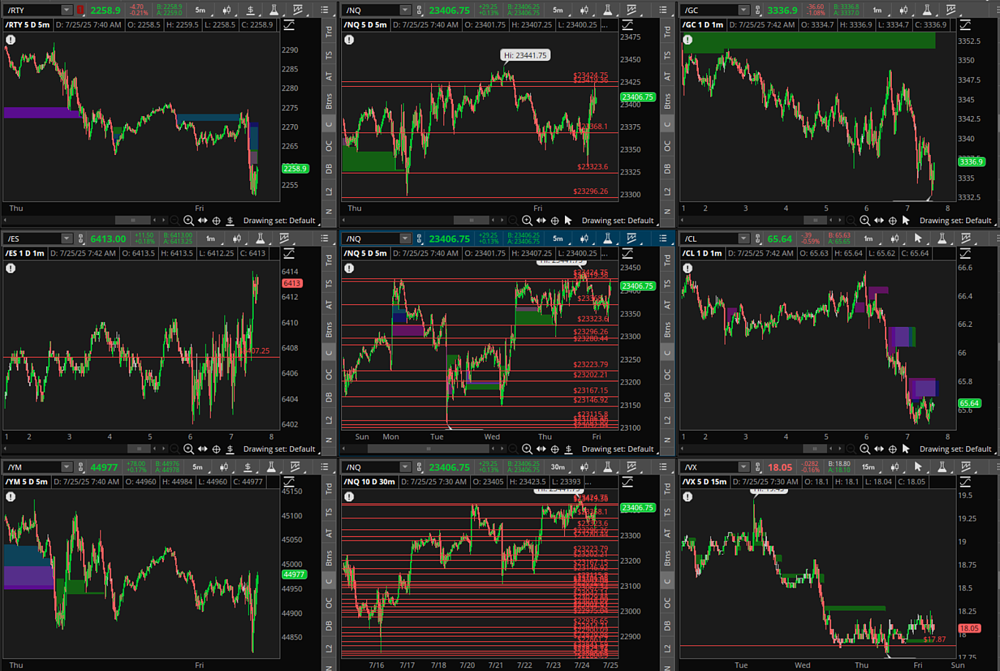

눈썰미 좋으신 어느 회원님의 질문, 나의 개인 계좌, 나의 거래 방법 공개..
Luvyrguts
2025.07.25. 23:53 조회 29
어느 눈썰미 좋으신 회원님께서, 저의 개인 계좌 수익을 보고 질문을 하셨어요.
예전 글에서 하루에 2번이상 거래 안하기로 했다고 했는데, 왜 개인 계좌 거래수가 많냐고 질문을 하셨어요.
저의 개인 계좌는 시작한지 한 3개월 정도 되었고, 이 계좌는 말 그대로 갬.블.용.입니다. ㅋ
5천불 넣어 놓고, 이천불 벌때마다 돈을 빼고, 잃어도 그만이라는 생각으로 돌립니다. 다행히 계속 수익은 나고 있습니다. 어떤 날은 몇일 거래를 들고 가기도 하고, 어떤 날은 3-40번 거래 하기도 합니다. 스탑로스도 사용 안해요. 물타기, 불타기도 하면서 그냥 돌려요.
여러분은 어떤지 모르겠는데, 전 프롭펌 계좌를 날리면 돈은 둘째치더라도, 이벨 다시 해야 하고, 쿠션 쌓고, 더 벌어서 페이 신청하고.. 이 과정에서 심리적 부담감이 상당합니다. 하도 계좌를 날리다 보니, 1년전 프롭계좌의 거래 룰을 세웠던거예요.
프롭펌 계좌는 한두번만 거래하고, 손이 간지러우면, 갬블용으로 넘어갑니다. ㅎ
저의 거래 방법은 참.... 이건 공개하기도 창피할 정도로 단순하게 합니다.
하루에 2번 미장 오픈, 마감 시간에 거래를 해요.
이건 질문하신 회원님과도 공유를 했는데, 여러분의 의견, 그리고 여러분의 거래 방법도 듣고 싶어 공유합니다.
일단 한두달 전이나 더 멀리 데이 캔들에서 하이 로우 선을 거 놓습니다. 미장 개장 전, 아시안, 유로 장, 그리고 이코노믹 뉴스를 보고 그날 불, 베어를 정합니다. 거기에 맞춰서 선에 따라 지지 저항 이용해서 롱, 숏 갑니다.
마감 시간 거래는... 참... 제가 봐도 처참하긴 한데, 마감 시간 1시간 반에서 30분 정도 전에.. 그날 올랐으면, 지지 저항선 따라서 숏, 그날 떨어졌으면, 롱 갑니다. ㅋㅋㅋ. 이건 뭐 유치원 생도 하겠네요. ㅎ
나름대로의 그 이유는 그날 올랐다면 많은 바이어들이 팔아서 그날 거래를 마감하기때문에 숏을 가거나, 그 반대로 내렸다면 마감하기 위해 셀러들이 다시 사들이기 때문입니다.
그리고, 페어 벨류 갭, 볼륨, VIX도 같이 보구요, 제가 거의 마이크로 나스닥을 거래하는데, SP500 지지 저항선도 같이 보고, ES, RTY, YM, NQ 컨플루엔스도 봅니다. 저의 스크린을 공유하면 이렇습니다.

나스닥 많은 선들이 데이 하이 로우 입니다. 페어벨류갭은 컬러 박스 인데, 거의 매꿔집니다. 지금 상황에서 보면 RTY 갭이 생겼는데, 저것도 시간이 지나면 매꾸어 질겁니다.
이것 저것 공부하다가 포기하고, 지표 전혀 안보고, 지지 저항, 볼륨, 프라이스 액션, 갭만 따라가요.
운인지 뭔지 단순히 가다 보니까 수익이 나기 시작하더라구요.
여러분의 생각도 듣고 싶네요. 여러분의 거래 전략은 어떻게 되나요???
까치산
재미있게 잘 읽었습니다. 저도 어느정도 고려했었던 일일 고점 저점을 지지와 저항으로 활용하는 전략을 사용하시는군요..
저는 백테스팅을 통해서 최근 6개월 동안 수익이 난 전략을 사용하고 있어요.
2025.07.26. 00:06
분홍강아지
와....그러니깐 저도 사실 이렇게 매매하고 싶긴 합니다만,, 심리가 안되서요... 부럽습니다.
저는 간이 콩알만해서 강제적으로 스캘핑 매매만 하고 있습니다.
이렇게 차트 압축(구겨서?)해서 보시는분은 처음이네요.. 저는 확대만 합니다.....ㅠㅠ
곰곰히 생각해보니깐, 트레이딩이건, 프랍이건 목적은 수익인데, 저의 목적은 무엇이였나 생각해보게 되네요..
어찌됐든 글 적어주셔서 감사합니다!
2025.07.26. 00:12
원본 : 눈썰미 좋으신 어느 회원님의 질문, 나의 개인 계좌, 나의 거래 방법 공개..